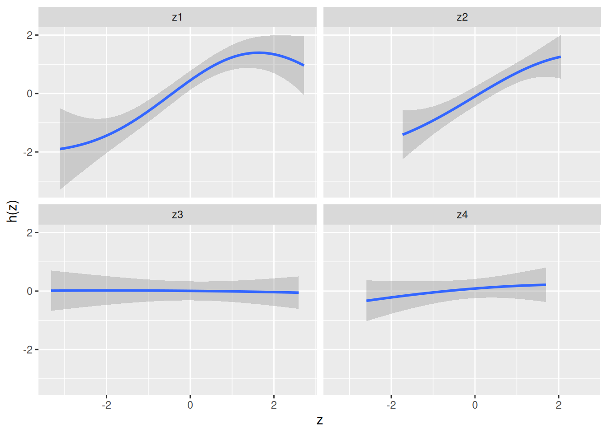
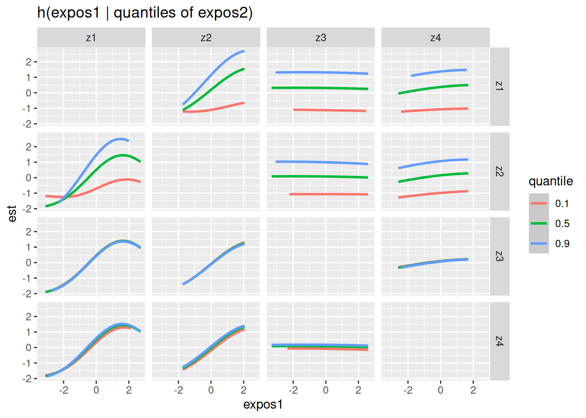
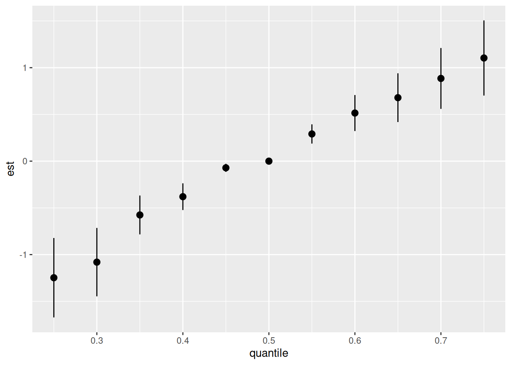
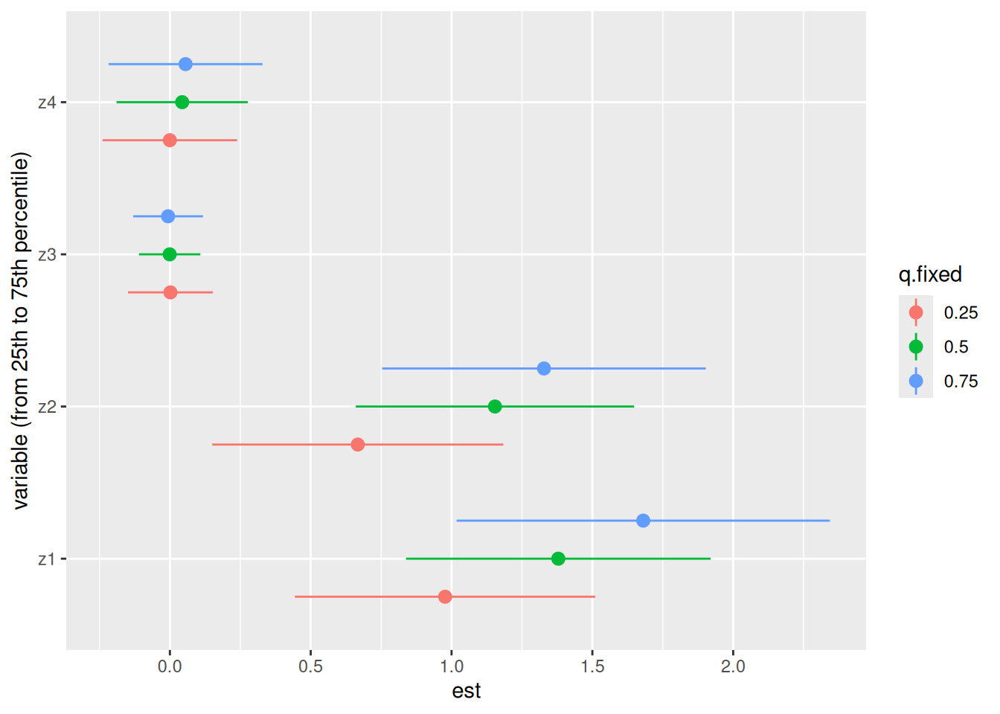

library(ggplot2)
set.seed(111)
dat <- bkmr::SimData(n = 50, M = 4)
y <- dat$y
Z <- dat$Z
X <- dat$X
fitkm_comp <- bkmr::kmbayes(y = y, # vector of outcomes
Z = Z, # matrix of exposures, each col being an exposure
X = X, # matrix of covariates, each col is a covariate
iter = 10000, # should be 30k-60k
family = "gaussian",
verbose = FALSE,
varsel = TRUE, # variable selection enabled
# without groups it's component-wise variable selection
# if I wanted to use fine-tuned parameters e.g:
# control.params = list(r.jump1 = 0.5, r.jump2 = 0.5)
# r.jump if varsel=FALSE
)Iteration: 1000 (10% completed; 1.82121 secs elapsed)Iteration: 2000 (20% completed; 3.34297 secs elapsed)Iteration: 3000 (30% completed; 4.85537 secs elapsed)Iteration: 4000 (40% completed; 6.39857 secs elapsed)Iteration: 5000 (50% completed; 7.7347 secs elapsed)Iteration: 6000 (60% completed; 9.23962 secs elapsed)Iteration: 7000 (70% completed; 10.73522 secs elapsed)Iteration: 8000 (80% completed; 12.09987 secs elapsed)Iteration: 9000 (90% completed; 13.72167 secs elapsed)Iteration: 10000 (100% completed; 15.21923 secs elapsed)# The posterior inclusion probabilities (PIPs) cleary indicate that z1 and z2
# should be included in the model (strong evidence would be >= 90 or 95 even)
bkmr::ExtractPIPs(fitkm_comp) variable PIP
1 z1 1.0000
2 z2 1.0000
3 z3 0.1316
4 z4 0.3522# We can explore the univariate relationship between each exposure and the outcome,
# where all of the other exposures are fixed to a particular percentile and all
# covariates are held constant. The argument specifying the quantile at which to
# fix the other exposures is given by q.fixed.
# Here we see that for z1 and z2, increasing values of the exposures is associated
# with increasing values of the outcome Y (for each of the other predictors in Z
# fixed to their 50th percentile). It also looks like z1 may have a nonlinear
# relationship with the outcome
pred.resp.univar.comp <- bkmr::PredictorResponseUnivar(fit = fitkm_comp,
q.fixed = 0.5)
ggplot(pred.resp.univar.comp,
aes(z, est, ymin = est - 1.96*se, ymax = est + 1.96*se)
) +
geom_smooth(stat = "identity") +
facet_wrap(~ variable) +
ylab("h(z)")
# We can explore the predictor-response function of a single predictor in Z for
# the second predictor in Z fixed at various quantiles (and for the remaining
# predictors fixed to a particular percentile).
# The argument qs specifies a sequence of quantiles at which to fix the second
# predictor.
pred.resp.bivar <- bkmr::PredictorResponseBivar(fit = fitkm_comp, min.plot.dist = 1)Pair 1 out of 6Pair 2 out of 6Pair 3 out of 6Pair 4 out of 6Pair 5 out of 6Pair 6 out of 6pred.resp.bivar.levels <- bkmr::PredictorResponseBivarLevels(
pred.resp.df = pred.resp.bivar,
Z = Z,
qs = c(0.1, 0.5, 0.9))
# If the lines are parallel, there is no interaction between these two elements,
# if not, there is an interaction
ggplot(pred.resp.bivar.levels, aes(z1, est)) +
geom_smooth(aes(col = quantile), stat = "identity") +
facet_grid(variable2 ~ variable1) +
ggtitle("h(expos1 | quantiles of expos2)") +
xlab("expos1")Warning: Removed 79 rows containing missing values or values outside the scale range
(`geom_smooth()`).
# We can compute the overall effect of the predictors, by comparing the value of
# h (kernel function) when all of the predictors are at a particular percentile
# and when all of them are at their 50th percentile.
# The qs arg takes a sequence of values of quantiles and q.fixed the fixed quantile
# (default is 50th percentile)
risks.overall <- bkmr::OverallRiskSummaries(fit = fitkm_comp, y = y, Z = Z, X = X,
qs = seq(0.25, 0.75, by = 0.05),
q.fixed = 0.5, method = "exact")
risks.overall quantile est sd
1 0.25 -1.24739906 0.21673973
2 0.30 -1.08070816 0.18670348
3 0.35 -0.57573602 0.10604212
4 0.40 -0.38021903 0.07280633
5 0.45 -0.07132577 0.02219936
6 0.50 0.00000000 0.00000000
7 0.55 0.29089749 0.05241877
8 0.60 0.51480791 0.09828120
9 0.65 0.67910858 0.13299200
10 0.70 0.88509541 0.16611097
11 0.75 1.10378912 0.20516513ggplot(risks.overall, aes(quantile, est, ymin = est - 1.96*sd, ymax = est + 1.96*sd)) +
geom_pointrange()
# Another summary of h that may be of interest would be to summarize the
# contribution of an individual predictor to the response (single-predictor
# health risks). For example, we may wish to compare risk when a single predictor
# in h is at the 75th percentile as compared to when that predictor is at its
# 25th percentile, where we fix all of the remaining predictors to a particular
# percentile. The two different quantiles at which to compare the risk are
# specified using the qs.diff argument, and a sequence of values at which to
# fix the remaining pollutants can be specified using the q.fixed argument.
# The plot makes it easier to see.
risks.singvar <- bkmr::SingVarRiskSummaries(fit = fitkm_comp, y = y, Z = Z, X = X,
qs.diff = c(0.25, 0.75), #h(z_{q2}) - h(z_{q1})
q.fixed = c(0.25, 0.50, 0.75),
method = "exact")
# Here we see that a change in z1 from it's 25th to 75th percentile, where the
# rest of the predictors are fixed at their 75th percentile (and the covariates x
# are constant), results in a ~1.68 estimated (additive) change in h().
# We also see the predictors z3 and z4 not contributing to the "risk" and that
# higher values of z1 and z2 are associated with higher values of h().
# The plot also suggests that for z1, as the remaining predictors increase in
# value from their 25th to their 75th percentile, the risk of the outcome
# associated with z1 increases. A similar pattern occurs for z2, which indicates
# the potential for interaction of z1 and z2
ggplot(risks.singvar, aes(variable, est, ymin = est - 1.96*sd,
ymax = est + 1.96*sd, col = q.fixed)) +
geom_pointrange(position = position_dodge(width = 0.75)) +
coord_flip() +
labs(x = "variable (from 25th to 75th percentile)")
# To make this notion a bit more formal, we may wish to compute specific ‘interaction’
# parameters. For example, we may want to compare the single-predictor health risks
# when all of the other predictors in Z are fixed to their 75th percentile to when
# all of the other predictors in Z are fixed to their 25th percentile. In the previous
# plot, this corresponds to subtracting the estimate represented by the red circle
# from the estimate represented by the blue circle.
risks.int <- bkmr::SingVarIntSummaries(fit = fitkm_comp, y = y, Z = Z, X = X,
qs.diff = c(0.25, 0.75), # in z1
qs.fixed = c(0.25, 0.75), # the rest of z
method = "exact")
risks.int# A tibble: 4 × 3
variable est sd
<fct> <dbl> <dbl>
1 z1 0.703 0.330
2 z2 0.661 0.334
3 z3 -0.00832 0.0935
4 z4 0.0558 0.171 # We see that single pollutant risk associated with a change in z1 from its 25th
# to 75th percentile increases by 0.7 when all other z are fixed at their 25th
# percentile, as compared to when all other z are fixed at their 75th percentile.